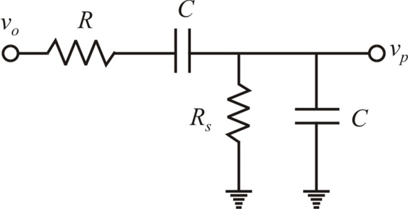
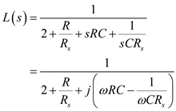

Refer to Figure 17.6 in the text book.
Write the expression of the frequency of oscillation.
Substitute 10 kHz for and for
for .
.
Refer to Figure 17.6 in the text book.
Write the expression of the frequency of oscillation.
Substitute 10 kHz for and for.
Refer to Equation 17.11 in the text book.
The loop gain of the Wien bridge oscillator is,
The phase of the oscillator is,
Derivative the phase with respect to  .
.
Find the expression of the derivative at .
Express the phase shift (lag) in rad.
in rad.
Determine the frequency shift.

The frequency of oscillation is,

Figure 1
The expression for the loop gain of the circuit as shown in Figure 17.6 in the text book.
Simplify further.

The phase shift of the loop gain is,
Substitute for and for .
and for .
Simplify further.
Substitute  for, 1.59 nF for
for, 1.59 nF for  and
and for
for .
.
 at
at  is,
is,
Simplify further.
Determine the magnitude of loop gain at .
at .

Substitute  for.
for.
Therefore, the change in value of is.